我的世界国际版交流
-分支界面-
光影安装-Optifine
Minecraft Launcher
官方启动器
安装Optifine
请确定您已经通过上一个教程安装了Java环境,否则你将无法启动Optifine安装器
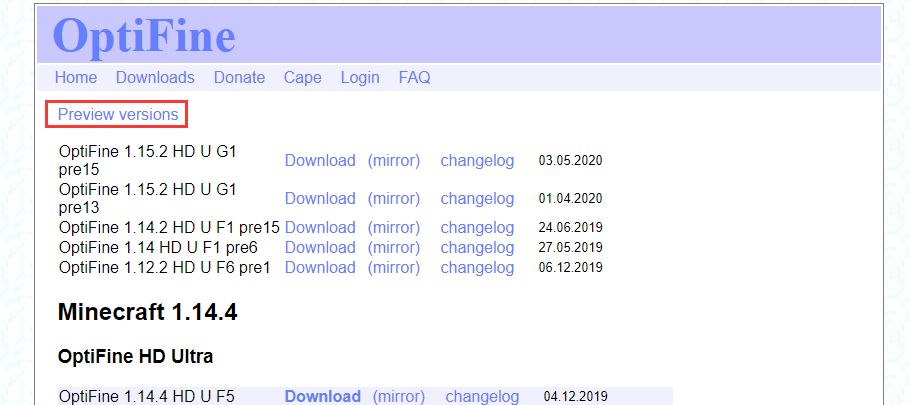
点击Preview versions可查看预览版本
点击Download旁边的mirror来下载对应版本的Optifine
若找不到你要的版本则说明此版本不支持optifine，无法安装
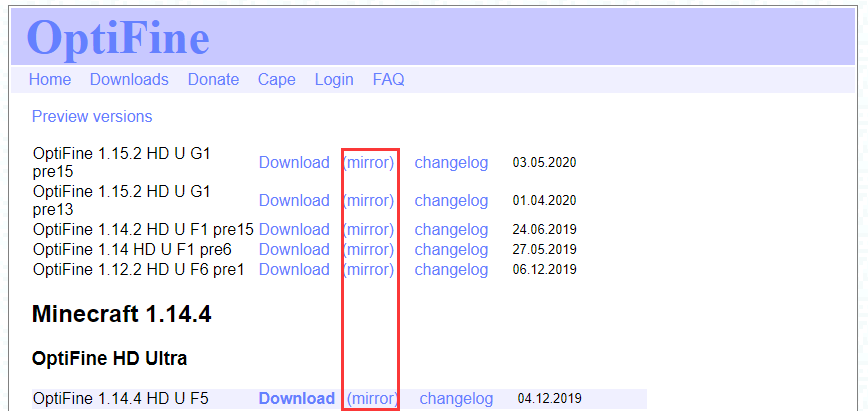
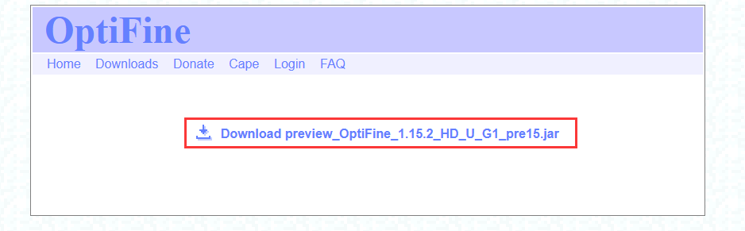
打开下载下来的文件，直接点Install安装
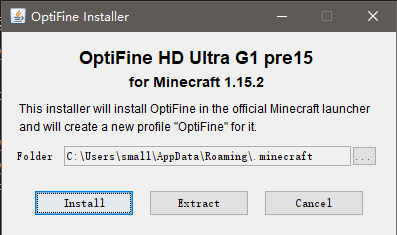
安装完毕后打开官方启动器然后选择版本中选择Optifine版本
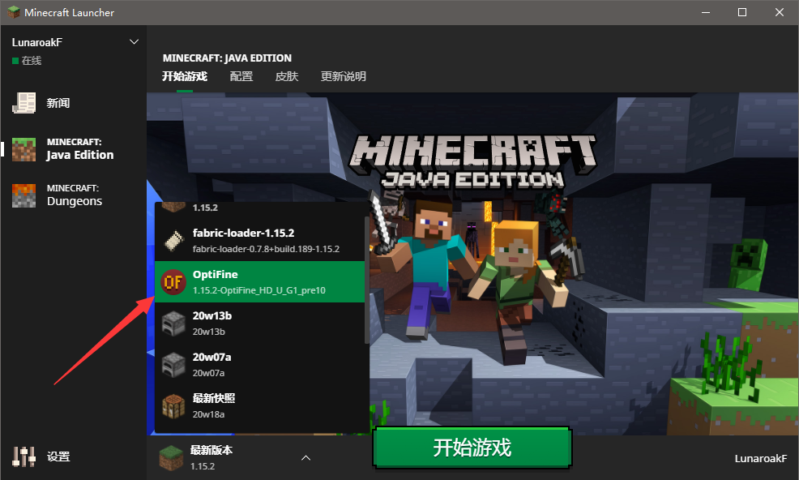
开始游戏
Hello Minecraft! Launcher
HMCL启动器
安装Optifine
新建游戏版本
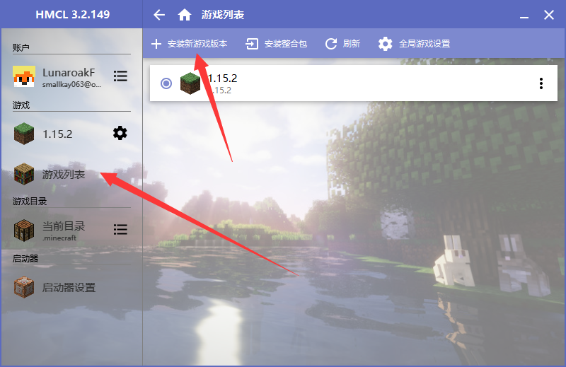
选择游戏版本
安装时选择安装Optifine
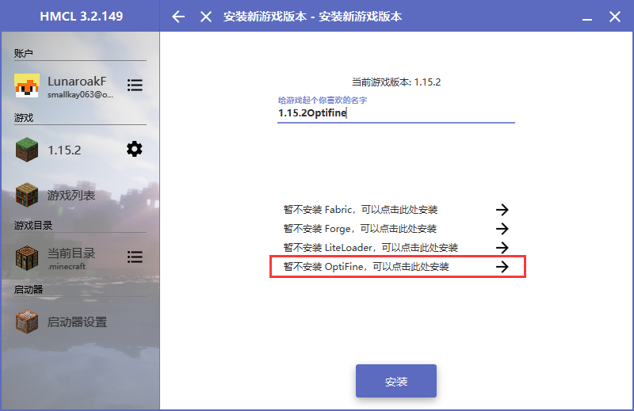
默认点最上面的一个(最新版本)
若没有版本显示则说明此版本不支持optifine，无法安装
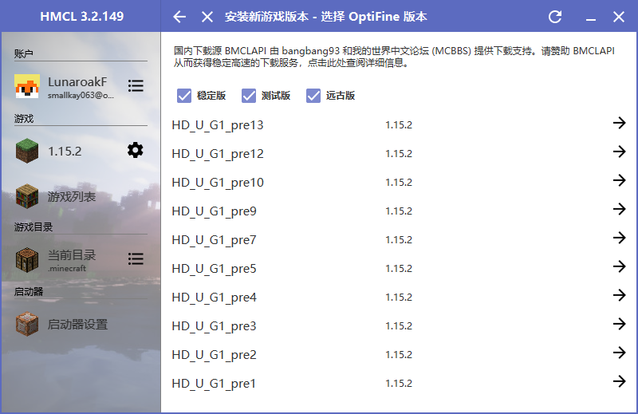
请耐心等待
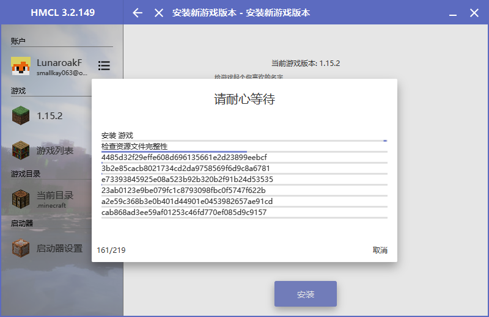
启动时选择游戏版本一定要选择安装optifine的那个版本
安装光影
游戏内选项>视频设置>光影
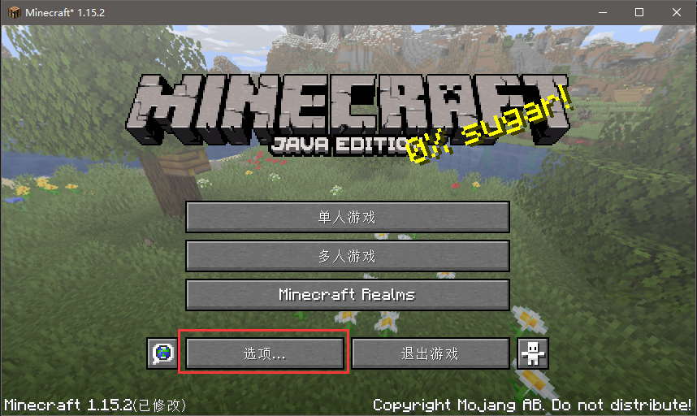
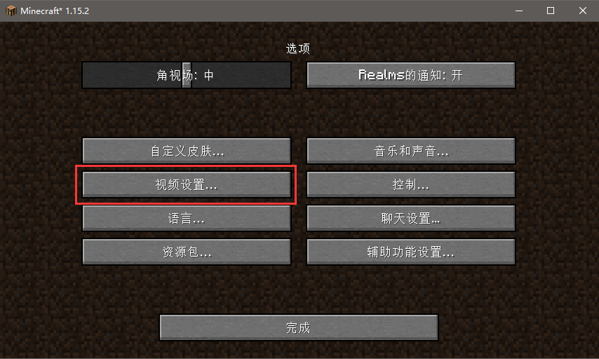
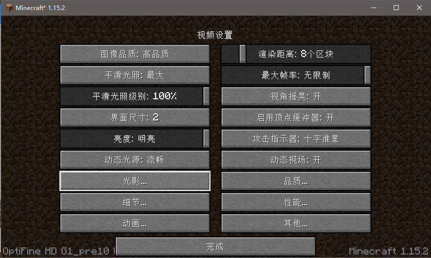
可以在此处选择所需光影和导入光影包(光影包文件夹)
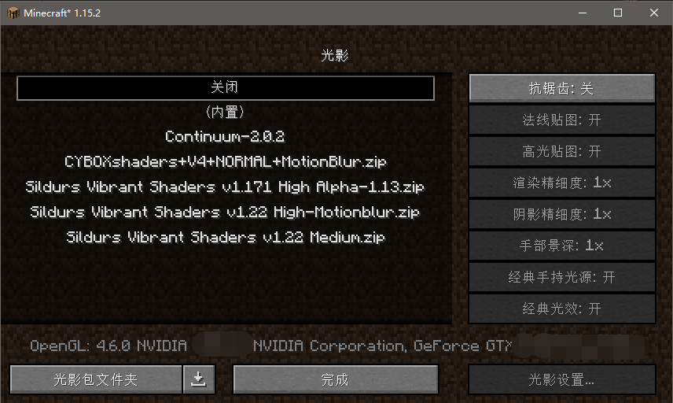
光影包可在群文件"[电脑版]光影 需要Optifine"下载
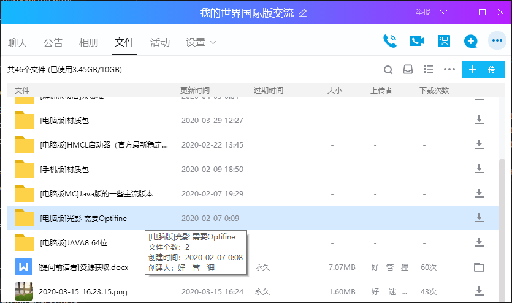
复制到光影包文件夹然后在游戏中选择对应光影包即可
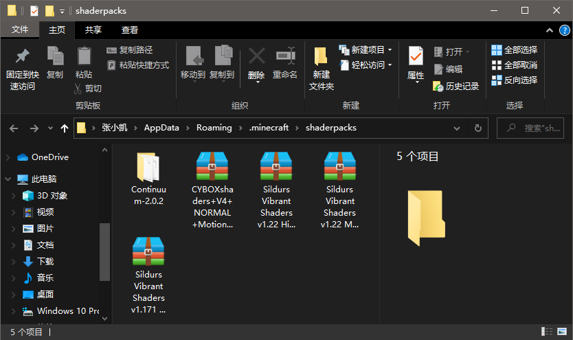